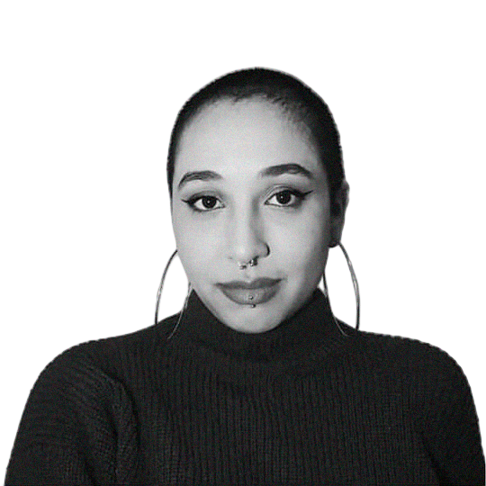

hello, world! I'm /////////////////////
Bruna de
Andrade
//////////////////////////////////////////////////////
Web developer & designer

Quem é essa Bruna?
- Estudante de Análise e Desenvolvimento de Sistemas.
- Foi estagiária de desenvolvimento web na Buser, pelo programa Buser Tech.
- Tem experiência com front-end com Vue, Vuetify, HTML, CSS e JavaScript, back-end com Python e Django e banco de dados Postgres, SQL. Atualmente estudando Java.
- Graduada em Design Gráfico. Na área, trabalhei em várias agências com foco em criação de interfaces para sites e apps.
- Apaixonada por literatura, cinema, filme de terror (principalmente os com efeitos práticos), viagens, arte e tecnologia. Dá pra conferir o que curto nas redes que deixei aqui do lado :)